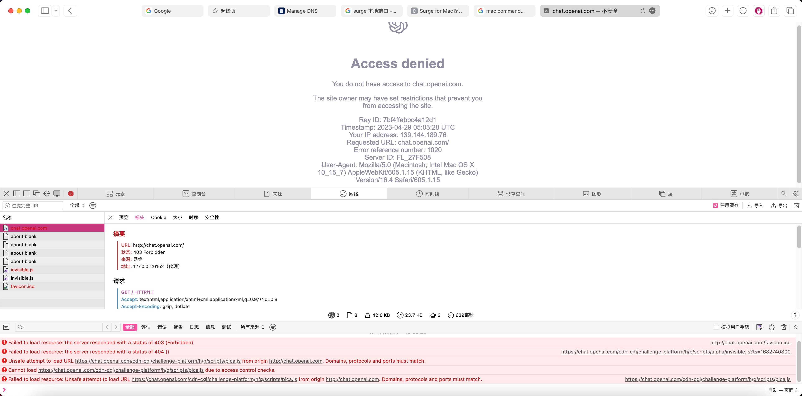
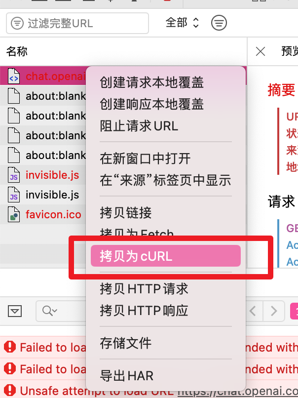
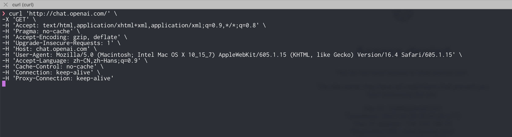
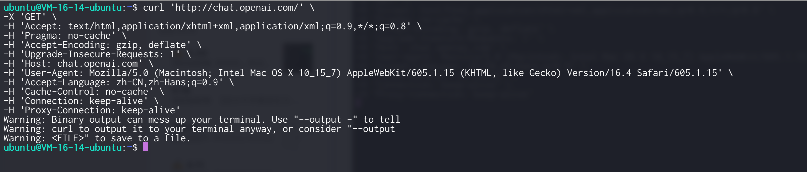
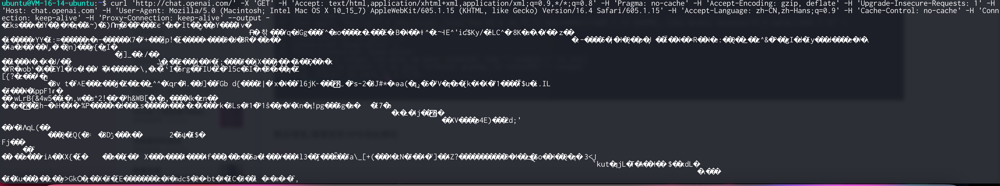
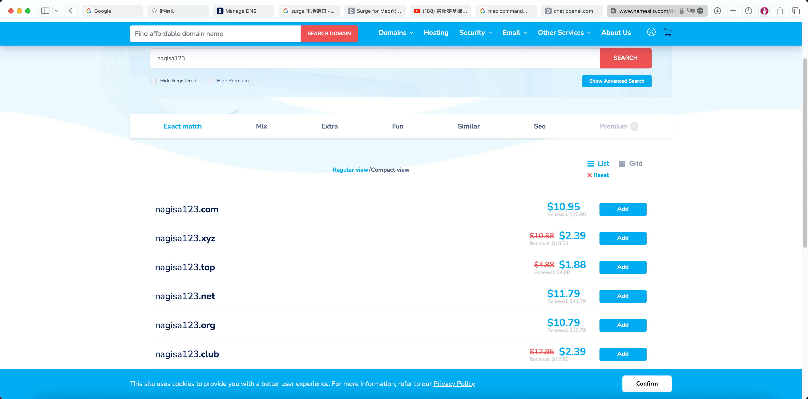
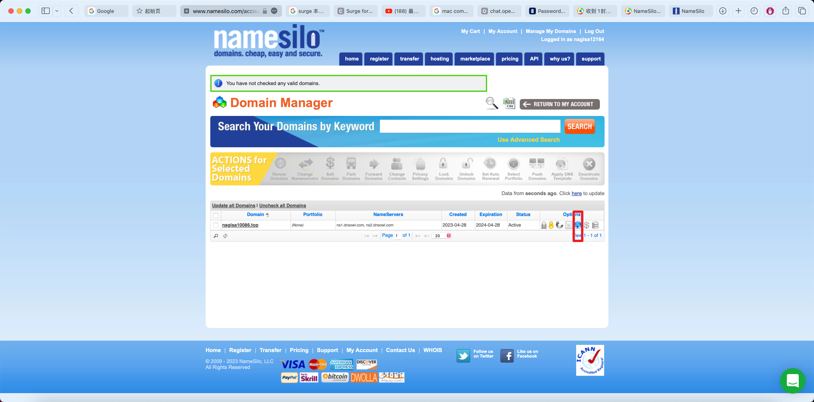

在本教程中，我们将详细介绍如何在 VPS 服务器上搭建一个中转站，用于绕过网络限制访问 OpenAI 的 ChatGPT 服务。我们会一步步进行从购买服务器到配置域名、安装必要的软件和工具，以及最后的伪装配置，以确保你的服务器能够稳定且安全地运行。
购买一台云服务器(香港)
首先，我们需要购买一台位于香港的云服务器（步骤省略）。
云服务器里边配置 SSH Key，方便后续使用
为了便于日后的登录操作，我们需要配置 SSH Key 认证：
❯ vim ~/.ssh/authorized_keys
将本机的 ~/.ssh/id_rsa.pub 内容添加到此文件中即可。
测试对于 OpenAI 的可访问性
测试从你的 VPS 服务器是否可以访问 OpenAI 的 ChatGPT 服务。以 Safari 浏览器为例，使用快捷键 ⌥+⌘+u 访问 https://chat.openai.com。

可以看到无法直接访问。我们可以使用 curl 工具进行进一步测试：
curl https://chat.openai.com

在 macOS 终端中测试时，表现为卡死状态。

在香港服务器中，执行 curl 命令后需要输出 binary，可以看到确实有响应。为进一步验证响应内容，在命令后添加 --output -：

结果表明响应是 OK 的。
购买域名，将域名和 VPS 地址绑定
接下来，我们需要为你的 VPS 服务器购买一个域名，并将其绑定到服务器的 IP 地址。你可以在 NameSilo 购买域名。

购买完成后，配置域名的 DNS 解析，将其指向 VPS 的 IP 地址：

过一段时间后，使用 ping 命令验证解析是否正确：

如果解析正确，那么你的域名已经成功指向了 VPS 服务器。
正式搭建
在此步骤中，我们将开始安装和配置服务器上的必要工具和软件。
启用 BBR TCP 拥塞控制算法
为了优化网络性能，我们将启用 BBR TCP 拥塞控制算法：
编辑 /etc/sysctl.conf 文件，添加以下两行：
net.core.default_qdisc=fq
net.ipv4.tcp_congestion_control=bbr
然后运行以下命令：
❯ sudo sysctl -p
安装 Nginx
Nginx 是一个高效的反向代理服务器和 Web 服务器，我们需要安装它来处理流量：
❯ sudo apt install nginx
安装 acme.sh
acme.sh 是一个自动化的证书管理工具，我们将使用它来申请并管理 SSL 证书：
❯ curl https://get.acme.sh | sh
然后添加一个软链接以方便使用：
❯ sudo ln -s /root/.acme.sh/acme.sh /usr/local/bin/acme.sh
❯ source ~/.bashrc
切换 CA 机构到 Let’s Encrypt：
❯ acme.sh --set-default-ca --server letsencrypt
申请 SSL 证书：
❯ acme.sh --issue -d 你的域名 -k ec-256 --webroot /var/www/html
安装 SSL 证书：
❯ acme.sh --install-cert -d 你的域名 --ecc --key-file /etc/x-ui/server.key --fullchain-file /etc/x-ui/server.crt --reloadcmd "systemctl force-reload nginx"
安装 x-ui
x-ui 是一个功能强大的图形界面工具，用于管理和配置代理服务器：
❯ bash <(curl -Ls https://raw.githubusercontent.com/vaxilu/x-ui/master/install.sh)
寻找「伪装」站点，防止 GFW 检测
为了避免服务器 IP 被 GFW（防火长城）检测并封禁，我们需要设置伪装站点。这一步非常重要。可以通过 Google 搜索相关站点，例如：
❯ intext:登录 Cloudreve
找到这个站点：http://www.leftblogs.ml
配置 X-ui
最后一步是配置 Nginx 和 X-ui，使其能够正确处理流量并提供伪装功能。替换 VPS 上的 /etc/nginx/nginx.conf 文件内容为以下配置：
user www-data;
worker_processes auto;
pid /run/nginx.pid;
include /etc/nginx/modules-enabled/*.conf;
events {
worker_connections 1024;
}
http {
sendfile on;
tcp_nopush on;
tcp_nodelay on;
keepalive_timeout 65;
types_hash_max_size 2048;
include /etc/nginx/mime.types;
default_type application/octet-stream;
gzip on;
server {
listen 443 ssl;
server_name nicename.co; # 你的域名
ssl_certificate /etc/x-ui/server.crt; # 证书位置
ssl_certificate_key /etc/x-ui/server.key; # 私钥位置
ssl_session_timeout 1d;
ssl_session_cache shared:MozSSL:10m;
ssl_session_tickets off;
ssl_protocols TLSv1.2 TLSv1.3;
ssl_prefer_server_ciphers off;
location / {
proxy_pass https://bing.com; # 伪装网址
proxy_redirect off;
proxy_ssl_server_name on;
sub_filter_once off;
sub_filter "bing.com" $server_name;
proxy_set_header Host "bing.com";
proxy_set_header Referer $http_referer;
proxy_set_header X-Real-IP $remote_addr;
proxy_set_header User-Agent $http_user_agent;
proxy_set_header X-Forwarded-For $proxy_add_x_forwarded_for;
proxy_set_header X-Forwarded-Proto https;
proxy_set_header Accept-Encoding "";
proxy_set_header Accept-Language "zh-CN";
}
location /ray { # 分流路径
proxy_redirect off;
proxy_pass http://127.0.0.1:10000; # Xray 端口
proxy_http_version 1.1;
proxy_set_header Upgrade $http_upgrade;
proxy_set_header Connection "upgrade";
proxy_set_header Host $host;
proxy_set_header X-Real-IP $remote_addr;
proxy_set_header X-Forwarded-For $proxy_add_x_forwarded_for;
}
location /xui { # xui 路径
proxy_redirect off;
proxy_pass http://127.0.0.1:9999; # xui 监听端口
proxy_http_version 1.1;
proxy_set_header Host $host;
}
}
server {
listen 80;
location /.well-known/ {
root /var/www/html;
}
location / {
rewrite ^(.*)$ https://$host$1 permanent;
}
}
}
在域名和 x-ui 端口号中配置端口映射。
重新加载 Nginx 配置文件：
❯ systemctl reload nginx
然后访问以下地址进行配置：
https://nagisa10086.top/a9937e29-6197-450d-fe08-002ee2182da1-xui/xui/
后续进展：发现腾讯香港服务器已经被 GPT 拉黑了，计划更换为亚马逊服务器继续搭建。
通过以上步骤，你将成功搭建一个 VPS 服务器并将其配置为 ChatGPT 中转站。未来你可以继续根据需要进行调整和优化，确保服务器的稳定性和安全性。